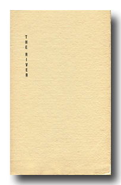

The River, 1980 limited edition
a poem in nine parts
Nadja
20 pages
a poem in nine parts
Nadja
20 pages
Available for purchase from The Hudson Review.
Click here to read selections from this book.
The River was printed in October 1980. The handmade papers are by Fabriano and HMP, the type is handset Stempel Helvetica. Designed and printed by Nadja. This first edition is limited to 100 numbered copies signed by the author.